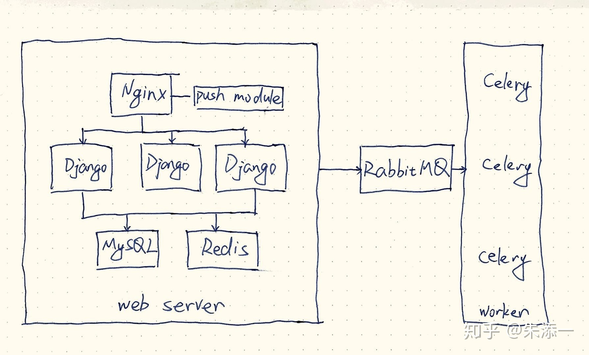
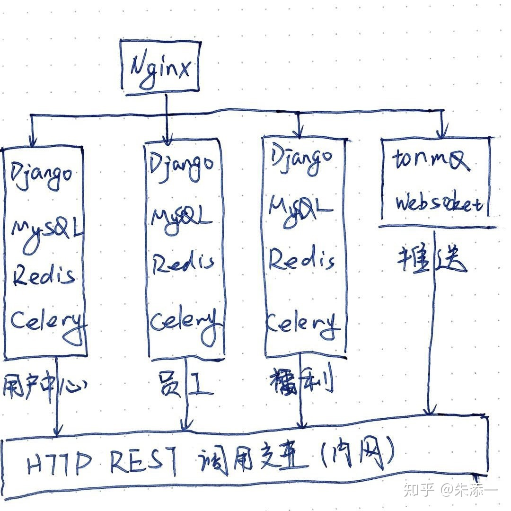
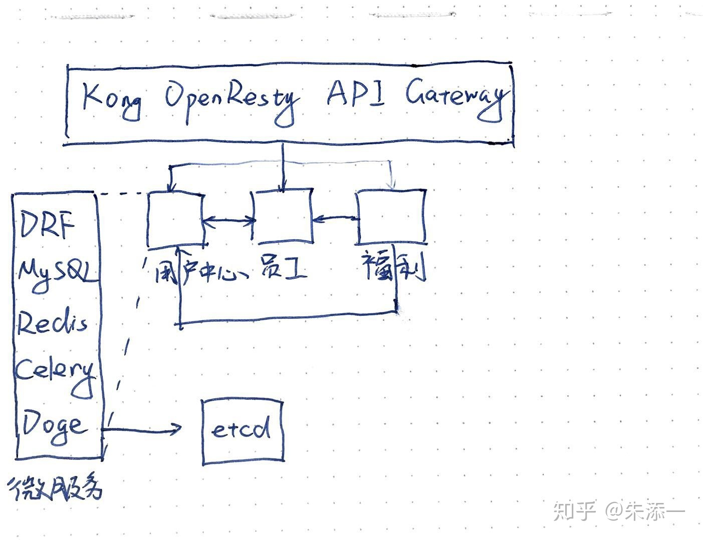
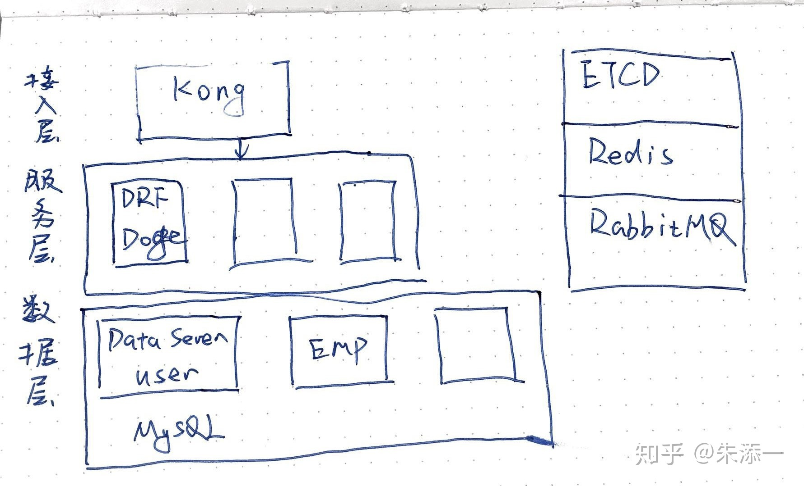

Python 002后端架构演变
前言
来腾讯之前在前公司做了3年的后端开发, 经历一款SaaS产品从0到10(还没有到100, 哈哈哈)的过程, 3年间后端的架构逐步演变, 在微服务的实践过程中遇到的问题也越来越多, 在这里总结下.
产品是一款服务于人力资源的SaaS在线服务, 面向HR有Web Android/iOS 小程序多个客户端, 后端采用RESTful风格API来提供服务. 主要使用Python语言, 方便快速迭代.
架构的演进经历了4个大的阶段:
- MVC
- 服务拆分
- 微服务架构
- 领域驱动设计.
1. MVC
项目刚开始的时候, 后端同事不超过5个, 这个阶段主要的工作是实现产品的原型, 没有太多的考虑架构, 使用Django来快速实现功能, DB的表结构设计好之后, 抽象出功能View, 由于产品设计也很不完善, 后端需要很多的预留设计, 避免产品逻辑的变更带来整个表结构的变动, 在这个阶段代码上最重要的是确定适合团队的代码规范, 代码检查规则.

整体上架构如上图,
- Nginx负责负载均衡, 分发流量到多个Django服务,
- Django处理逻辑,
- 需要异步任务就交给Celery,
- 然后数据量比较大的地方使用Redis做缓存.
- 同时还有实时消息通知的需要使用了Nginx Push Module.
问题与优化方式:
- Django并发性能差 使用uWSGI Master+Worker 配合 gevent 协程支持高并发
- Redis连接数过多 使用redis-py自带的连接池来实现连接复用
- MySQL连接数过多 使用djorm-ext-pool连接池复用连接
- Celery配置gevent支持并发任务
随着开发的功能越来越多, Django下的app也越来越多, 这就带了发布上的不方便, 每次发布版本都需要重启所有的Django服务, 如果发布遇到问题, 只能加班解决了. 而且单个Django工程下的代码量也越来越多, 不好维护.
2. 服务拆分
随着后端团队的壮大, 分给每个同事的需求也越来越细, 如果继续在一个工程里面开发所有的代码, 维护起来的代价太高, 而我们的上一个架构中在Django里面已经按模块划分了一个个app, app内高类聚, app之间低耦合, 这就为服务的拆分带来了便利. 拆分的过程没有遇到太大的问题, 初期的拆分只是代码的分离, 把公用的代码抽离出来实现一个公用的Python库, 数据库, Redis还是共用, 随着负载的增加, 数据库也做了多实例.

如上图, 服务之间尽量避免相互调用, 需要交互的地方采用http请求的方式, 内网的调用使用hosts指向内网地址.
问题与优化方式:
- Nginx Push Module由于长时间没有维护, 长连接最大数量不够, 使用Tornado + ZeroMQ实现了tormq服务来支撑消息通知
服务之间的调用采用http的方式, 并且要求有依赖的服务主机配置hosts指向被调用的地址, 这样带来的维护上的不方便. 以及在调用链的过程中没有重试, 错误处理, 限流等等的策略, 导致服务可用性差. 随着业务拆分, 继续使用Nginx维护配置非常麻烦, 经常因为修改Nginx的配置引发调用错误. 每一个服务都有一个完整的认证过程, 认证又依赖于用户中心的数据库, 修改认证时需要重新发布多个服务.
3. 微服务架构

首先是在接入层引入了基于OpenResty的Kong API Gateway, 定制实现了认证, 限流等插件. 在接入层承接并剥离了应用层公共的认证, 限流等功能. 在发布新的服务时, 发布脚本中调用Kong admin api注册服务地址到Kong, 并加载api需要使用插件.
为了解决相互调用的问题, 维护了一个基于gevent+msgpack的RPC服务框架doge, 借助于etcd做服务治理, 并在rpc客户端实现了限流, 高可用, 负载均衡这些功能.
在这个阶段最难的技术选型, 开源的API网关大多用Golang与OpenResty(lua)实现, 为了应对我们业务的需要还要做定制. 前期花了1个月时间学习OpenResty与Golang, 并使用OpenResty实现了一个短网址服务shorturl用在业务中. 最终选择Kong是基于Lua发布的便利性, Kong的开箱即用以及插件开发比较容易. 性能的考量倒不是最重要的, 为了支撑更多的并发, 还使用了云平台提供的LB服务分发流量到2台Kong服务器组成的集群. 集群之间自动同步配置.
饿了么维护一个纯Python实现的thrift协议框架thriftpy, 并提供很多配套的工具, 如果团队足够大, 这一套RPC方案其实是合适的, 但是我们的团队人手不足, 水平参差不齐, 很难推广这一整套学习成本高昂的方案. 最终我们开发了类Duboo的RPC框架doge, 代码主要参考了weibo开源的motan.
4. 领域驱动设计

在这一架构中我们尝试从应用服务中抽离出数据服务层, 每一个数据服务包含一个或多个界限上下文, 界限上下文类只有一个聚合根来暴露出RPC调用的方法. 数据服务不依赖于应用服务, 应用服务可以依赖多个数据服务. 有了数据服务层, 应用就解耦了相互之间的依赖, 高层服务只依赖于底层服务.
在我离职时领域驱动设计还在学习设计阶段, 还没有落地, 但是我相信前公司的后端架构一定会往这个方向继续演进.
总结
架构的设计, 技术的选型, 不能完全按照流行的技术走, 最终还是服务于产品, 服务于客户的需求. 设计过程中由于团队, 人员的结构问题, 有很多的妥协之处, 如何在妥协中找到最优解才是最大的挑战.
Service Mesh这种新一代的微服务架构正在成为主流, 虽然现在的工作与微服务无关了, 但是也还会继续关注学习.